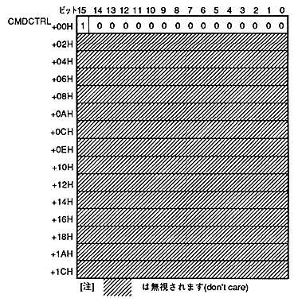

Return to previous page ｜ Return to menu ｜ Go to next page
-
■ 7.10 Drawing end command
- The drawing end command specifies the drawing end.
When the end bit is "1", it is a drawing end command.
The contents of the command table are as follows.

- If you set + 00H address to 8000H, it will be the drawing end command.
Return to previous page ｜ Return to menu ｜ Go to next page